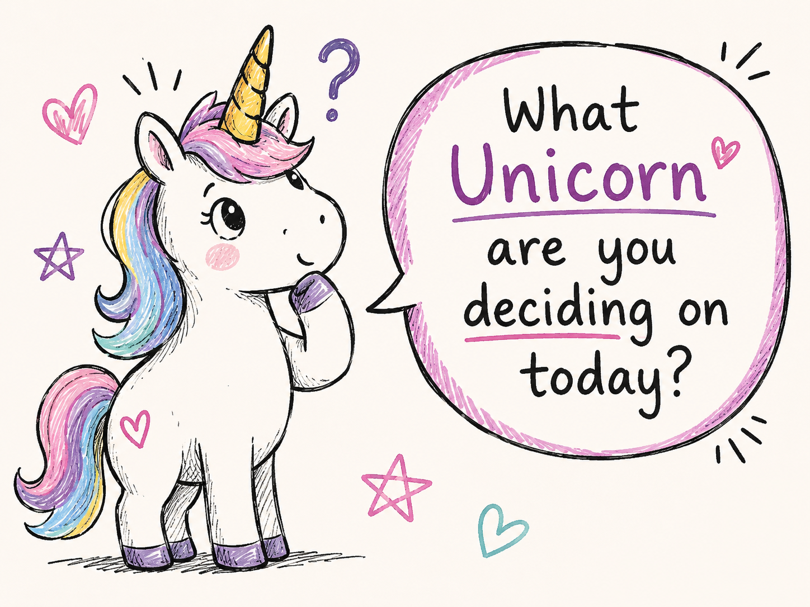

Legendary Unicorn
Things are broadly stable.
Support needs may be lower, with attention on maintaining progress, building opportunities and keeping things moving in a useful direction.
Mostly steady. Still fabulous.
A simple way of understanding where things are right now without turning anybody into a label, number or case file.
Snapshot. Not life sentence.
The Unicorn System forms part of the support model we're developing. It isn't currently being used to provide assessments or allocate services. Veterans Backbone has not yet launched.

Our proposed categories are intended to help understand how much practical support a person may need at a particular point in time.
They could help identify what's stable, what's changing and which needs should be considered during an appropriate review.
The categories are not medical diagnoses, mental health assessments or a replacement for professional safeguarding decisions.
Think sat nav. Not tattoo.

A sat nav needs to know where you are before it can help work out where you're going.
That doesn't mean you're stuck there forever. It just means understanding the starting point.
That's what we want the Unicorn System to help with once the service is operational.
Starting point first. Journey second.
Yes, we could have called them Level 1, Level 2 and Level 3. We chose unicorns instead because life is miserable enough.
These are proposed support-planning descriptions, not assessments of anyone using this website.
Things are broadly stable.
Support needs may be lower, with attention on maintaining progress, building opportunities and keeping things moving in a useful direction.
Mostly steady. Still fabulous.
Some things are working. Some things are decidedly not.
Extra planning, practical support or help with stability may be useful in one or more areas.
Wobbly-ish. Workable.
There may be significant challenges requiring a more urgent review of practical support needs.
Red does not mean failure. It means a person's circumstances may need greater attention.
Needs backup. Not judgement.
Important: these categories are not an emergency triage system. If somebody is in immediate danger, call 999. Veterans Backbone is not currently providing crisis or emergency support.
These aren't grades. Nobody wins a trophy for being Green and nobody gets detention for being Red.
The proposed categories would simply help describe circumstances at a point in time and inform support planning.
No pass marks. No fail marks. No gold stars.
In fact, we'd expect circumstances and support needs to change.
Housing changes. Health changes. Relationships change. Work changes. Money changes. Life occasionally throws a chair through the window.
In the future model, categories should be reviewed when circumstances change.
Reality should never be forced to fit a category.
The situation changes. The support changes.

Here are the kinds of questions we want the review process to explore.
What has stabilised? What is working now that wasn't before?
What may need more support, more time or a different approach?
New problems, opportunities, circumstances or priorities.
No mystery files. No secret codes. No people discussing someone's life while forgetting to include them.
Our planned approach is to explain the category, the reasoning behind it, what it means and why it might change.
Any future assessment process will also need appropriate privacy, consent, safeguarding and recordkeeping arrangements.
Categories should clarify things. Not confuse them.

Green, Amber and Red are proposed tools. They are not identities.
Nobody becomes “a Red veteran” or “an Amber case.”
You're a person whose circumstances may change over time. No colour should ever replace understanding your actual situation.
Human first. Category somewhere after that.
It is not permanent.
It is not a judgement.
It is not a score.
And it is not an operational service yet.
Snapshot. Not life sentence.
How we intend to understand circumstances without turning the process into an interrogation.
Our planned assessments →Progress is rarely neat. That doesn't mean it isn't progress.
See the journey →Explore the different routes future support might take.
Explore pathways →The whole point is to understand the person rather than force them into a preselected category.
We're still developing the Unicorn System as part of our future service. Individual assessments aren't available yet.